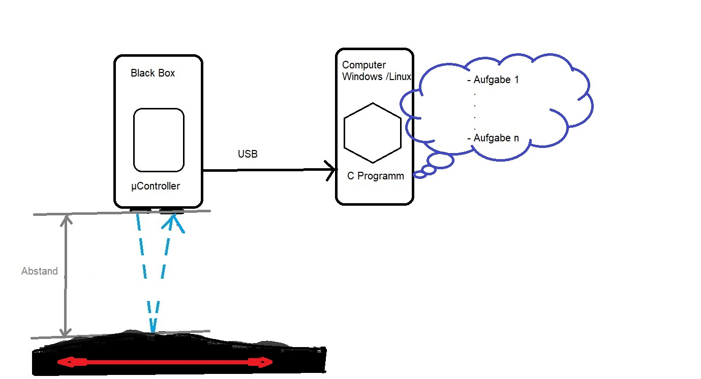
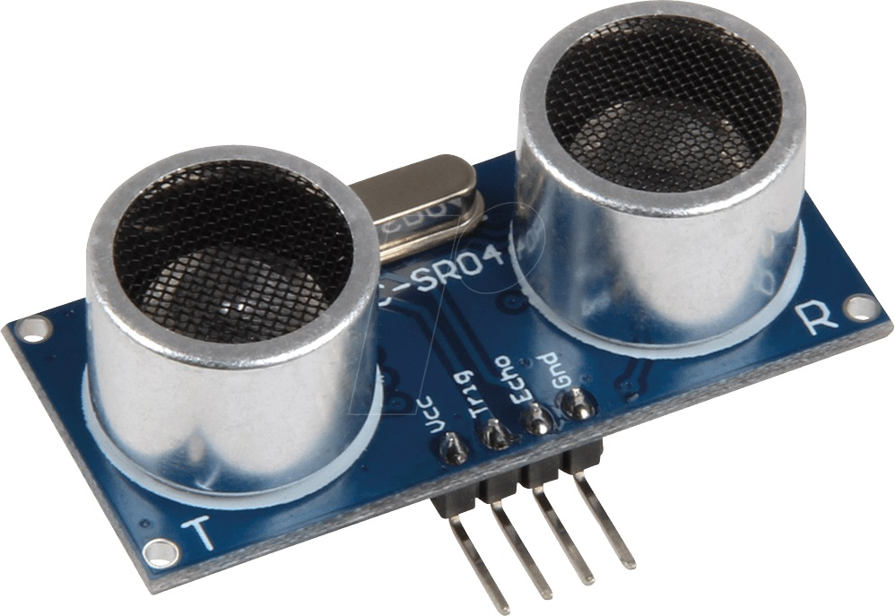
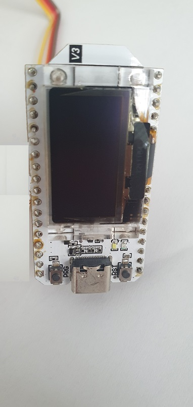
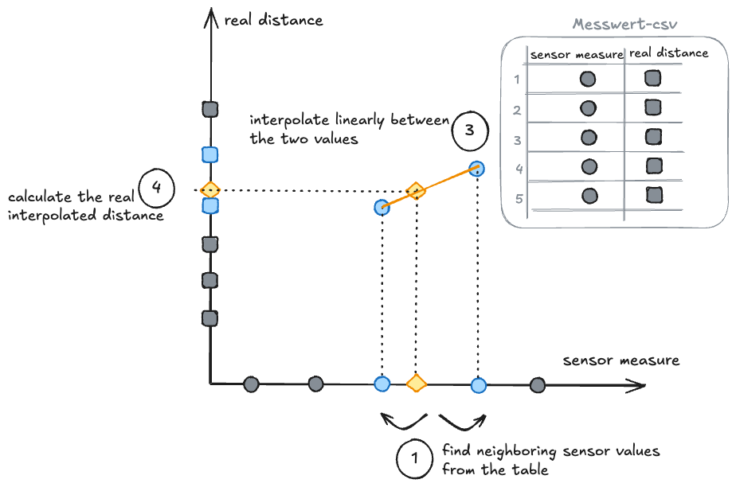

---
title: Programm Struktur
---
flowchart TD
Menue -->|Manuell| D[Aufgabe 1 - DA ]
Menue -->|Manuell| E[Aufgabe 2 - TEST ]
Menue -->|Automatik| F[Aufgabe3 - AUTO ]
F --> |Grafisch| G[Diagramm]
Menue -->|Automatik| H[Aufgabe4 - FILTER ]
Menue -->|Automatik| I[Aufgabe5 - FUN ]
Laboraufgabe.
Es soll eine Höhenmesser entwickelt werden, der ein Höhenprofil aufnehmen kann. Dazu wird in diesem Labor die Informatik - Komponente entwickelt.

Für die Entwicklung ist schon ein Hardware-Aufbau (Black-Box) vorhanden. Diese bietet verschiedene Grundfunktionen an, die anhand der Aufgaben erweitert werden sollen.
Beschreibung Hardware-Blackbox:



Die Blackbox ist ein Gehäuse in dem ein µ Controller Signale von einem Ultraschall Sensor (US-Sensor) erfasst diese verarbeitet und über die USB Schnittstelle ausgibt. Die gesendeten Daten sind im INT (Integer) Format und werden mit einer Frequenz von 1Hz ausgegeben Die Spannungsversorgung erfolgt auch über den USB Anschluss (5V/0,500mA).
Rahmenbedienung
- Es muss in C programmiert werden.
- Verwendung einer sqlite-Datenbank
- Verwendung von
structs - Aufteilen des Codes in Header (.h) und Source (.c) Dateien
- Verwendung von CMake als Buildsystem
- Jede Laboraufgabe wird auf einem eigenen Branch in github oder gitlab entwickelt.
- Die Implementierung erfolgt in dem während der Vorlesung erstellten C-Projekt-Template.
Laborsetup
Die Daten von der Black Box werden über die serielle Schnittstelle (USB) gesendet und können sowohl unter Windows, Linux oder MacOS Betriebsystem bearbeitet werden.
Zum einrichten des jeweiligen Systems siehe Beschreibungen am Ende der Laboranleitung.
Implementierung erfolgt auf den Jetsons aus dem Digitalisierungslabor. Diese wird durch die Dozenten bereitgestellt und supportet. Ein Austausch des Codes erfolgt über git (github oder gitlab).
Das C-Project kann auf den Jetsons ohne devcontainer verwendet werden, da es schon ein Linux als host System ist.
Um die Entwicklung auf Windows-PCs zu ermöglichen und in dem bekannten Setup mit Visual Studio Code und cmake zu arbeiten gibt es folgende Möglichkeiten:
- Mingw Installation auf Windows mit cmake und gcc ()
- Windows Subsystem for Linux (WSL) mit Ubuntu installieren und dort cmake und gcc installieren.
- Serielle Kommunikation zur Blackbox in devcontainer einrichten. Siehe Anhang
Abnahme
- Die Laboraufgaben werden einzeln abgenommen.
- Der Code wie auch die erzeugten Visualisierungen müssen erklärt werden.
- Der Code muss sauber mit Methoden, structs und unterschiedlichen .h und .c Dateien strukturiert sein. (vgl. Vorlesungsprojekt)
- Die weiteren Rahmenbedinungen müssen eingehalten werden.
Abgabe Ausarbeitung
- Laden Sie auf Moodle folgende Dateien hoch
- 4x .csv Dateien ( messung_1.csv, messung_2.csv, messung_3.csv, messung_4.csv )
- C Programm
- Screenshot der ausgegebenen grafik in .png oder .jpeg Format
Abgabefrist wird im Labor bekannt gegeben
## Spielregeln
- Labortermine sind Pflichttermine.
- Ausarbeitung daheim ist erlaubt.
- Team Work, max 3 Teildehmer ist erlaubt. Allerdings ist ein
gesamt Kenntnisstand vom jedem Teilnehmer erfragt.
AUFGABEN:
Aufgabe 1
Plausibilität der eingelesen Werte. Modus “DA” - DatenAufnahme
Ziel: Es ist ein C Programm zu entwickeln, mit dem der von Hand gemessene Abbstand und der Blackbox gelieferter Wert auf Tastendruck in einer csv-Datei messung_x.csv speichert.
Labortask Beschreibung
- US-Sensor in einer festen Position zu einem Objekt abstellen
- Den Abstand vom Sensor zur Fläche mit einem Lineal messen und über die
Kommandozeile (in Zentimeter) eingeben und mit Enter bestätigen. Dieser Wert soll als realer Abstandswert in der csv-Datei gespeichert werden. (siehe nachfolgende Tabelle) - In der nachfolgenden Spalte den vom Sensor gelieferte Wert speichern (auch Wert in Zentimeter)
- In der nachfolgenden Spalte die berechnete Differenz der beiden Werte eintragen
- 20 Messungen Anfang = 10 cm, Schrittweite = 2 cm durchführen.
- Nach 20 Punkten soll die Eingabe nicht mehr möglich sein und das Programm springt automatisch zum Menue Auswahl über.
- Speichern der Daten in einer Datenbank (sqlite). Das Datenbank Layout ist passend gewählt. Aus der Datenbank kann eine Tabelle als
csv Name: messung_1.csv exportiert werden. - Option: Plot mit reeler und den vom Sensor gelieferte Werte in Excel programmieren und graphisch ausgeben.
| Messung Nr. | ABSTAND | Abweichung | |
|---|---|---|---|
| Reeler Wert | Vom Sensor erfasster Wert | ||
| über Tastatureingabe | über USB eingelesen | ||
| 1 | |||
| 2 | |||
| … | |||
| n-1 | |||
| n |
Aufgabe 2
Kalibrierung des Sensors mit einer Look-Up Tabelle. Modus “TEST”
- Die Ermittlung soll auf Basis der messung_1.csv erfolgen.
- Der Sensorwert soll in den realen Abstandswert mit einer Look-Up Tabelle umgerechnet werden.
- Durch den Tausch der Messwert-csv-Datei ist es möglich das Programm auf einen anderen Wertebereich festzulegen oder einen andere Blackbox zu verwenden..
- Zwischen den Datenpunkten aus der Look-Up Tabelle soll linear interpoliert werden, um aus dem Sensorwert den korrekten Abstand zu berechnen.
Siehe folgende Skizze:

Funktion der Look-Up Tabelle:
- Der Sensorwert wird eingelesen.
- Die nächsten zwei Sensorwerte aus der Look-Up Tabelle werden gesucht.
- Zwischen diesen beiden Werten wird linear interpoliert, um den realen Abstand zu berechnen.
- Der berechnete reale Abstand wird ausgegeben.
Labortask Beschreibung
- US-Sensor in einer festen Position zu einem Objekt abstellen
- Das messen des Abstands vom Sensor zur Fläche wird mit einem Tastendruck auf Enter ausgelöst. Dieser Wert wird als gelesener Abstandswert (in Zentimeter) in einer Datenbank (sqlite) und dann von dort in einer csv-Datei messung_2.csv exportiert. (Muster siehe nachfolgende Tabelle)
- In der nachfolgenden Spalte den interpolierten Wert eintragen (in Zentimeter)
- Mehrere Messungen durchführen ( minimum 20 ) . Abstand ist diesmal willkürlich ausgewählt.
- Der Modus soll so lange laufen, bis ein spezieller Tastendruck (z.B. “q”) erfolgt. das Programm springt automatisch zum Menue über
- Option: Plot mit Soll und Ist Wert in Excel programmieren und graphisch ausgeben.
| Messung Nr. | ABSTAND | Abweichung | |
|---|---|---|---|
| Vom Sensor Wert | Interpolierter Wert | ||
| über USB eingelesen | Berechnet | ||
| 1 | |||
| 2 | |||
| … | |||
| n-1 | |||
| n |
Aufgabe 3
Automatisch messen. Modus “AUTO”
Labortask Beschreibung
- für ca. 10 Sekunden eine Messung bzw. ein Bewegungsablauf starten
- Zeitstempel der erfassten Werte und die Werte in einer Datenbank (sqlite) speichern und dann in einer .csv Tabelle messung_3.csv exportieren.
- Visualisieren der Höhenkarte anhand der Zeitstempel - in C programmiert.
- Ist die Zeit zwischen zwei Zeitstempeln immer gleich?
- Wenn nein die max und min sowie auch die durchnits Abtast Zeit berechnen.
- Im Windows/Linux/MacOs System mehrere Task’s starten (youtube Video, Maus bewegen usw. ) und gleiche Mesusung nochmal durchführen.
- Wie verändern sich jetzt die Werte der Zeitstempel? Speichern Sie die Daten in einer in einer Datenbank (sqlite) und exportieren sie diese in einer.csv Tabelle - messung_4.csv
Aufgabe 4
Daten Filtern. Modus “FILTER”
- Filter Sie die in messwert3.csv gespeicherten Abstands Werte.
- Programieren Sie ein Mittelwert Filter über 3 Werte z.B. u(m)=(SUMME( y(m-1):y(m+1))/3)
- Ploten Sie beide Werte Reihen in einem Diagramm und die dazugehörige Differenz zwichen den beiden Wertereihen in einem neuem Diagramm
Aufgabe 5
Fun: Make it a game. Modus “FUN”
Labortask Beschreibung
- ASCII Art level durch Höhenkarte. Das C Programm gibt eine Höhenkarte auf der Kommandzeile aus.
- U-Boot mit W - up, S - down gesteuert durch die Höhenkarte navigieren.
- von links nach rechts fährt das Uboot automatisch.
- Beenden Sie das Spiel wenn das U-Boot auf Grund läuft (also mit der Höhenkarte kollidiert).
Beschreibung Betriebssystem anpassen:
Daten im L I N U X Betriebs-System empfangen und auslesen/speichern
WarningVorbereitung jetsons - Falls noch nicht durch Laborpersonal vorbereitet
(optional) Update Packages and fix issues
sudo apt-get update -y sudo apt --fix-broken install -y sudo dpkg --configure -ainstall cmake
sudo apt-get install -y cmake ninja-buildinstall sqlite
sudo apt-get install -y sqlite3 libsqlite3-devInstall brave browser
curl -fsS https://dl.brave.com/install.sh | shoder:
sudo apt-get install brave-browserInstall minicom, um die Werte der Blackbox auszulesen
sudo apt-get install minicomSetzen der Rechte für ttyUSB0:
sudo usermod -aG dialout $USER #Wenn $USER nicht vorhanden, dann $johbaum8 eingeben
Mit minicom testen
Mit minicom können Sie testen, ob die Blackbox Werte liefert:
sudo minicom -b 115200 -D /dev/ttyUSB0
#oder
minicom -b 115200 -D /dev/ttyUSB0Schritt-für-Schritt-Anleitung
- Black Box an die USB Schnittstelle vom Jetson anschliessen
- Moodle Beschreibung “ITEC-Lec04.04 Grundlagen C” aus “Einführung in C” ausführen
- Punkt 4 (mkdir .devcontainer) aus 1.1.1 Schritt 1 ” Ordnerstruktur erstellen” nicht ausführen. Kein DevContainer!
- Kapitel 1.1.2 Schritt 2 “Devcontainer konfigurieren” nicht ausführen
- Mit Schritt 3 (1.1.) weitermachen. Hinweis: C Code zum auslesen vom Com Port ist am Ende der Beschreibung zu finden.
Daten im W I N D O W S Betriebs-System empfangen und auslesen/speichern
Anhang Installationsvorgehen zur Verwendung von USB serial Kommunikation auf Windows host Systemen mit WSL 2
ImportantImportant Note
Open the PowerShell as Administrator!
Update WSL 2 and install usbipd‑win on Windows
Ensure WSL is up‑to‑date. Open a PowerShell as Administrator terminal and run:
wsl --updateThe Microsoft command‑line blog notes that WSL needs to be on a 5.10 kernel or newer and suggests updating before using USB/IP.
Install usbipd‑win.
Use winget to install the latest release. In an elevated PowerShell prompt run:
winget install --interactive --exact dorssel.usbipd-winInstalling usbipd‑win registers a service on Windows that shares local USB devices to WSL.
List available USB devices.
From an elevated command prompt run:
usbipd listThis command prints each device’s BUSID, vendor/product IDs and current state. Note the BUSID corresponding to the serial adapter you want to share.
Connected:
BUSID VID:PID DEVICE STATE
1-8 5986:2115 Integrated Camera Not shared
1-9 06cb:00be Synaptics UWP WBDI SGX Not shared
1-14 8087:0026 Intel(R) Wireless Bluetooth(R) Not shared
4-3 046a:0114 USB-Eingabegerät Not shared
4-4 10c4:ea60 CP2102 USB to UART Bridge Controller Not shared
Persisted:
GUID CP2102 USB to UART Bridge Controller is the description of the serial adapter we need. Its BUSID is 4-4.
Bind and attach the device.
First, make the device sharable with usbipd bind --busid=<BUSID>.
usbid bind --busid <BUSID>Then attach it to WSL using:
ImportantOpen WSL terminal
To attach the device to WSL, open a WSL terminal such as Ubuntu from:
Startmenue → Ubuntu xx.xx
usbipd attach --busid <BUSID> --wslThe usbipd documentation explains that bind is persistent, whereas attach connects the device to the running WSL VM.
Install USB/IP client tools inside WSL
In order for WSL to communicate with the usbipd service, install the Linux USB/IP user‑space tools:
sudo apt update
# Install the appropriate linux‑tools package for your kernel and the hwdata database
sudo apt install linux-tools-$(uname -r) hwdata usbutils
# Register the usbip client binary if your distribution does not do so automatically
sudo update-alternatives --install /usr/local/bin/usbip usbip \
/usr/lib/linux-tools-$(uname -r)/usbip 20Microsoft’s guidance demonstrates installing linux-tools and hwdata, then registering usbip with update-alternatives . The usbutils package provides the lsusb utility used later.
After attaching the device from Windows, verify that WSL can see it:
lsusbYou should see an entry corresponding to your serial adapter. Depending on the driver, it will also create a character device such as /dev/ttyUSB0 or /dev/ttyACM0. You can find it with:
ls -l /dev/ttyUSB* /dev/ttyACM* 2>/dev/nullIm VSCode Terminal folgende Befehle ausführen: RUN apt-get update RUN apt-get install -y sqlite3 libsqlite3-dev ninja-build USER root RUN apt-get install -y –no-install-recommends usbutils minicom RUN usermod -aG dialout vscode USER vscode WORKDIR /workspaces
This configuration installs usbutils and minicom so you can inspect USB buses and open serial. Adding the vscode user to the dialout group avoids running commands as root.
If you know the exact device file (/dev/ttyUSB0 or similar) you may instead map only that device using “–device=/dev/ttyUSB0” for finer control. The example above maps all USB devices.
Anhang: Daten im Windows Betriebs-System empfangen und auslesen/speichern
Daten im Mac OS Betriebs-System empfangen und auslesen/speichern
Hier ist der gleiche C Code anwendbar.
NoteC Code für Linux MacOS und Windows(im WSL2)
C File zum auslesen vom COM Port - Black Box im Linux Betriebssystem
#include <errno.h>
#include <fcntl.h>
#include <stdio.h>
#include <stdlib.h>
#include <string.h>
#include <termios.h>
#include <unistd.h>
#define READ_CHUNK 64
//Um die Simulation der Sensorwerte anzuschalten muss "SIM 0" gesetzt werden.
#define SIM 1
//Praeprozessor Makro fuer die Oeffnungsflags des seriellen Ports
#ifdef __APPLE__
#define OPEN_FLAGS O_NONBLOCK
#else
#define OPEN_FLAGS O_RDWR
#endif
/**
* Configures the serial port with the desired settings.
*
* Important settings are:
*
* - Baudrate: 115200
* - Initial read timeout: 0.5s
* - no min bytes for read (non-blocking)
*
* @param fd The file descriptor of the opened serial port.
* @returns 0 on success, -1 on failure.
*/
int configure_serial(int fd) {
struct termios tty;
if (tcgetattr(fd, &tty) != 0) {
perror("tcgetattr");
return -1;
}
cfsetispeed(&tty, B115200);
cfsetospeed(&tty, B115200);
tty.c_cc[VTIME] = 5; // 0.5s Timeout
tty.c_cc[VMIN] = 0; //has to be 0 for non-blocking read for mac os
tcflush(fd, TCIFLUSH);
if (tcsetattr(fd, TCSANOW, &tty) != 0) {
perror("tcsetattr: Fehler beim Setzen der Einstellungen");
return -1;
}
return 0;
}
/**
* Handles a complete line read from the serial port.
* @param line The line to handle (null-terminated string).
* @returns the distance as float in cm, or -1.0f on error.
*/
float convert_to_sensor_val(const char *line) {
char *endptr = NULL;
errno = 0;
float value = strtof(line, &endptr);
if (!(errno == 0 && endptr != line)) {
value = -1.0f;
fprintf(stderr, "Warning: could not parse float from '%s' - Errno: %s\n", line, strerror(errno));
}
return value;
}
typedef struct _sim_data {
size_t length;
size_t index;
float data[32];
} sim_data;
/**
* Simulation of the sensor read
* @return the number of bytes read
*/
ssize_t read_sim(int serial_fd, char* chunk, size_t chunk_len){
static sim_data s_data = {32, 0,
{10.25f, 12.80f, 15.60f, 18.45f, 21.10f, 23.95f, 26.70f, 29.55f,
32.30f, 35.15f, 37.90f, 40.75f, 43.50f, 46.35f, 49.10f, 51.95f,
54.70f, 57.55f, 60.30f, 63.15f, 65.90f, 68.75f, 71.50f, 74.35f,
77.10f, 79.95f, 82.70f, 85.55f, 88.30f, 91.15f, 93.90f, 99.60f}};
//sleep fuer 1 sec
sleep(1);
//neuen Werte aus liste holen
float value = s_data.data[s_data.index];
//update index
s_data.index = (++s_data.index)%s_data.length;
if (chunk_len == 0) {
return 0;
}
int written = snprintf(chunk, chunk_len, "%f\n", value);
if (written < 0) {
return -1;
}
if ((size_t)written >= chunk_len) {
written = (int)(chunk_len - 1);
}
return written;
}
int connect_to_sensor(char * tty_path){
//Oeffnen des seriellen Ports
int serial_fd = open(tty_path, OPEN_FLAGS);
if (serial_fd < 0) {
fprintf(stderr, "Failed to open %s: %s\n", tty_path, strerror(errno));
return -1;
}
//Konfiguration des seriellen Ports
if (configure_serial(serial_fd) != 0) {
fprintf(stderr, "Failed to configure %s: %s\n", tty_path, strerror(errno));
close(serial_fd);
return -1;
}
return serial_fd;
}
int main(void) {
#if SIM
char* tty_path = "/dev/ttyUSB0";
int serial_fd = connect_to_sensor(tty_path);
#else
int serial_fd = 0; //wird in der Simulation nicht benoetigt.
#endif
//Normalerweise wird stdout gepuffert, was bei der seriellen Ausgabe
//zu Verzögerungen führen kann. Mit diesem Aufruf wird die Pufferung deaktiviert.
setvbuf(stdout, NULL, _IONBF, 0);
//Buffer zum Lesen und Verarbeiten von Daten pro Sensor
char chunk[READ_CHUNK];
char line_buffer[2*READ_CHUNK];
size_t line_len = 0;
while (1) {
#if SIM
ssize_t bytes_read = read(serial_fd, chunk, sizeof(chunk));
#else
ssize_t bytes_read = read_sim(serial_fd, chunk, sizeof(chunk));
#endif
if (bytes_read < 0) {
if (errno == EINTR) {
continue;
}
perror("read");
break;
}
if (bytes_read == 0) {
continue;
}
for (size_t i = 0; i < bytes_read; ++i) {
char c = chunk[i];
if (c == '\r') {
continue;
}
if (c == '\n') {
if (line_len > 0) {
line_buffer[line_len] = '\0';
float value = convert_to_sensor_val(line_buffer);
printf("Sensor Value: %.3f cm\n", value);
//TODO: Weiterverarbeiten des Sensorwerts
line_len = 0;
}
continue;
}
if (line_len + 1 >= sizeof(line_buffer)) {
fprintf(stderr, "Warning: incoming line too long, discarding.\n");
line_len = 0;
continue;
}
line_buffer[line_len++] = c;
}
}
close(serial_fd);
return 0;
}